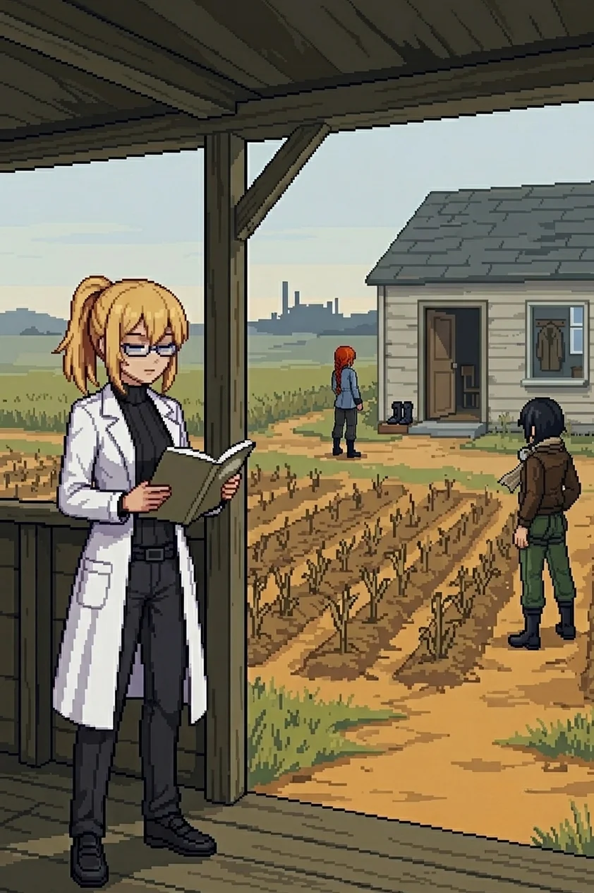
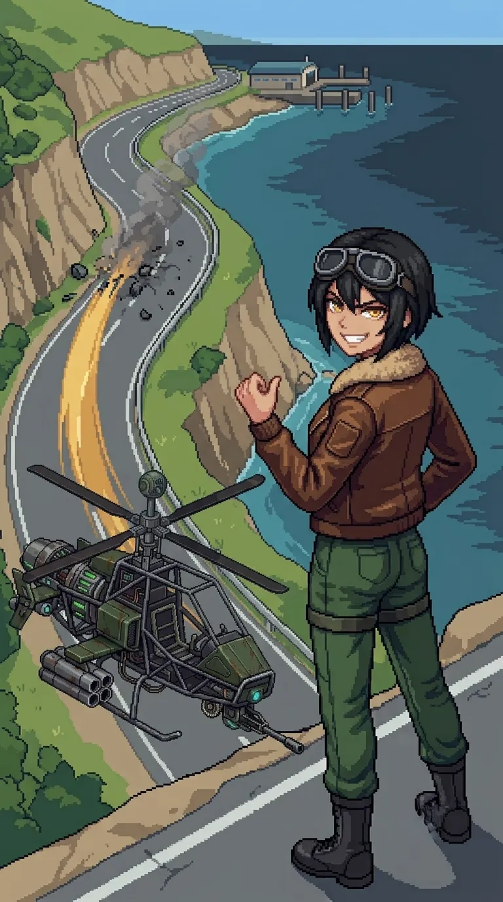

Chapter 3: Oracle¶
Published June 24, 2026
Revision 6, updated July 22, 2026

The panel was where my hands expected it to be.
I stood hip-deep in the cold with the powered-down unit above me, the salt white in the creases of her jacket, her face tipped toward the open sea. The same authentication fields. The same designation entry. My hands ran the sequence they had run twice before, and I watched them do it the way I had watched them do everything since I woke: from one step behind.
"Contacts." Katyusha, from the beach. "In the channel, closing from the east. And on the sand. Multiple."
The terminal made its sound, a held breath releasing, and the first shot landed in the water before the breath was done.
"Cruiser in the channel!" Nadeshiko was already lifting. "Heavy class, and it's coming straight in!"
Katyusha put herself between me and the beach approach. I stayed where I was, one hand on the panel, because the sequence had not finished and my hands refused to leave it unfinished.
The captain's hat shifted.
A slow turn of the head, unhurried in a way that nothing about the morning justified. She found the cruiser in the channel first. Then the drones on the sand. Then me.
"Hey."
A shell went long over the shallows. She did not look at it.
"...Huh. You again, Doc."
The name landed. There was no time to ask about it.
"Give me the channel," she said, already moving. "I'm on it."
"I am logging this," Katyusha said, from between me and the gunfire.

I moved back onto dry sand and stayed there.
The cruiser was her own class, and it moved the way she moved, and for four minutes the channel belonged to whichever of them read the other faster. Maria read faster. Katyusha cleared the sand. Nadeshiko took the last patrol drone at the waterline, and then the beach was quiet and the wreckage settled into the shallows.
Nadeshiko watched it settle.
"That cruiser was exactly your model, Maria. It moved just like you."
"Yes."
Maria's gaze was still on the wrecked cruiser.
"That is going to be a consistent problem."
"And she knew you," Nadeshiko said, turning to me. "You went into the water under fire like you'd done it a thousand times, and she called you Doc before she was all the way awake."
"She activated me the same way the first time," Maria replied. "Did not even look up from the console."
The first time. Something in that wanted to open into something larger and I almost let it.
At the high ground above the tideline, a figure stood with her back to the sea. She was writing on the rock face: slow and deliberate, the same care I had seen in the paint at the lab. When she finished she looked at what she had written, then walked inland without pausing.
We crossed to the rock.
The center is waiting.
"Same hand as at the lab and the hangar," Katyusha confirmed.
"Yes."
Then I moved to the nearest unit and began working. My hands were already assessing damage before I directed them to. The structural checks ran before I consciously looked for damage, the corrective sequences came before I reached for them, and I worked through all three without reference materials, the knowledge running through my hands the way the activation sequences had: certain, specific, and attached to nothing.
When I straightened they were all watching me.
"You're about to tell me you just know how to fix all three of us," Maria noted.
"I just do. That is all I have."
For a moment, nothing was closing in.
The coast was quiet around us. The water came in from the east in small flat waves. The salt smell here was clean, nothing underneath it, and the light had gone to midday white, flat and still.
"The signal at the center is unlike any unit signature I have logged," Katyusha reported. "It is distributed, not point-source, and it has been running continuously."
"Since before we arrived?" I asked.
"The duration is beyond what I can measure. I cannot account for what it has been doing yet."
Maria was sitting on a flat rock at the waterline.
"So while we were all offline, something at the center was running the whole time."
Nadeshiko stood at the edge of the path, looking at the slope where Drona had gone.
"She keeps leaving us directions but she has never said what she actually wants. So are we just following her?"
"We do not need to know her intentions to know where she wants us to go."
No one answered for a moment.
"You are not obligated to continue."
Maria's expression did not change.
"Don't get weird about it."
Silence.
"...Hey."
Nadeshiko was looking at something that was not a view but a fact.
"We're all here. All of us. That's new."
I looked at Katyusha, at Nadeshiko, at Maria, who had turned to look at the same thing, and whose expression held something I was not certain I was reading correctly.
"It is, isn't it."
"Four units operational," Katyusha reported. "Formation viable."
Drona's footprints went ahead up the slope, inland. The center was waiting.
"...Then we follow her."
Maria took us as far as the water went: a shallow inlet running north off the tideline, her hull idling at a walking pace so I could ride the deck rather than the sand. It was the first time since waking that covering ground had cost me nothing. The inlet narrowed to a drainage cut and then to nothing, and she put us ashore without a word about it, the way you set something down when you are done carrying it.
We went the rest of the way on foot. The path climbed north out of the coast and the salt thinned behind us. Two hours into the interior the terrain changed character: harder underfoot, the soil a different color than the coast, the scrub shorter and less dense as it gave way to cut lanes. Straight sections. Deliberate clearings. The kind of spacing that comes from someone measuring rather than walking. Katyusha had gone quiet in the way she goes quiet when she is reading rather than moving.
"Same signal signature. Different configuration. The layout does not match a standard patrol pattern."
I had noticed it. I had not been able to name it. She had named it before I reached for it.
"Nobody planned this by accident."
Nadeshiko was scanning the lane junctions, back and forth.
"I want to know who."
"We push through."
Two clusters held the lanes, the second calibrated above anything we had cleared on the coast, the sound of it a register above the light scouts from the first morning. Katyusha worked them wide while Nadeshiko threaded the aerial contacts, and when the second cluster fell, the silence was different. There was no offshore wind here to fill it.
"Both cleared," Katyusha reported. "The second cluster was calibrated above anything we have engaged on this network. The hardware is intact. Not abandoned. Maintained."
Nadeshiko: "And the further we go, the worse that's going to get."
"We move to the ridge."
The ridge broke the line of the interior and gave us the view.
The lanes spread below us in both directions, and from here you could read the design in a way you could only read it from above: not a patrol network, not placement by habit or iteration. The coverage overlapped at every junction. The gaps were not gaps; they were corridors, and the corridors all led inward. Someone had thought about the inward direction with care.
Maria was reading it the way she reads water.
"Look at the lane positions. The target specialization, the overlapping coverage. Someone built this to hold the center, Doc. That is a human design."
"When did it stop being maintained?" I asked.
"Unknown."
Katyusha was looking north, reading something I could not see from where I stood.
"The central protocol identifier reads ORACLE."
A pause that was less than a second.
"It has not shut down. It is standing by."
Oracle.
The word arrived with weight. Not casual, not incidental: the weight of something that required precision when you named it. I had said this word many times, in a specific register, to a specific person. I could not reach a single one of the occasions.
"That name was not accidental," Maria noted. "Someone picked it."
"What is it standing by for?" Nadeshiko asked.
I looked north. Drona's footprints in the dry ground of the path ahead. The direction she had taken each time she left us.
"I do not know. But it did not power down. It is waiting for something."
"I cannot read its purpose yet," Katyusha reported. "Drona's trail continues north. Toward it."
No one said anything about that. The ridge held us for a moment, and the name held us with it, and then we moved.
The descent took us east and the lane view dropped away. The design did not become less present for being out of sight.
East of the perimeter lanes the terrain opened into the first farmland we had encountered since the coast.
A farmhouse set back from the path, a field before it. The rows in the field were still legible in the dead growth: the furrow spacing, the placement, the care of someone who had planted for a season and expected to be present at the end of it. The growth had gone brown and flattened in the time since, but the rows were there underneath, the geometry of intention surviving the absence of the person who made it. The door of the farmhouse stood open. Not forced. Not broken. Open the way a door is open when you step out for a moment and mean to return.
I stopped at the field's edge.
A pair of boots on the step, set together neatly, not dropped. A clay pot just inside the threshold, something dried in it that had been green once. The window beside the door clear of dust on the inside, the kind of clear that comes from someone wiping it on a schedule. A chair visible through the window, a coat on the back of it. The specific density of a place where someone's life is still arranged, only the person is gone.
"They were living here."
Nadeshiko had come up beside me.
"Before the network turned."
Maria had stopped on the path behind us. She was looking at the window.
"Someone kept that window clean."
The rows. The door. The boots.
"We proceed carefully."
Nadeshiko
The aerial contacts broke formation the moment I came in on the first vector: four interceptors, pursuit-triggered, and now they were tracking me instead of the ground approach, which opened up the margin for Katyusha below. Good.
I liked this part. The clean snap when their targeting logic flipped to chase me. The geometry blooming open. For half a second everything felt right... but then the moment was gone.
I wanted to finish the thought about why I liked it... but I could not.
From the second pass I could see the rows. The furrow spacing, the placement, the geometry of something planted with intention. I had been over this field once already and I noticed the rows more than I should have. The door of the farmhouse was still open. I could see the boots on the step from there, set together, two of them, side by side on the stone.
I was late on the fourth intercept. Half a beat, no more. The contact dropped anyway. I did not examine the gap.
The boots. I kept catching them between passes, small and deliberate at the frame of the step. There was something I was reaching for. The sentence stopped before it got there. I had the full sensor read of the farmhouse approach. Whatever I was reaching for was not in the data.
The rows were still there. The door was still open. The boots were still on the step, placed by someone who meant to put them on again.
Maria closed the water contact on the south approach. Katyusha took the last ground contact. The field held.
My teeth were clenched. I hadn't told them to do that.
'This is not-'
I put the smile back and climbed north. The field fell away. Whatever I was reaching for was still not in the data.
Below, the team was moving.
Erika
I found the patrol manifest in the shelter at the field's north edge: a wooden post structure, military-functional, built after the farmhouse and not with it.
The manifest was in a weathered case on the shelf. I took it out.
My fingers found the second section before I had looked for the page.
I held the manifest open and read.
Two hands on the pages. The first I recognized from the wall messages, the same pressure, the same deliberate spacing. The second was different. The second was someone whose handwriting I almost knew, the way you almost remember a word when you hear its first syllable, the shape of it arriving before the meaning does. The spacing between words narrowed as each entry went on, a writer who accelerated into certainty. Familiar at a register below conscious recall. I read the coordination notes. I did not follow the recognition to where it pointed. I read what was on the page.
Two operators. One primary network; the other running something alongside it that the manifest's own categories did not quite contain. Coordination dating from well before whatever had emptied this place. Both hands consistent across many entries, working together for a long time.
I noted it and closed the case.
Nadeshiko was watching me from the field margin.
"...You knew the page."
"I read what I can reach." I put the manifest back and moved north.
The path out of the shelter ran back past the farmhouse before it turned north.
We came to the farmhouse again from the path on the north side, the rows visible through the dead growth, the door still open in the same position, the boots still on the step.
Maria had stopped at the field's edge. She was looking at the rows.
"Those rows are still in order, Doc. People who mean to come back plant like that."
"They left in order. Not in a hurry."
Nadeshiko was quiet for a moment.
"I wonder where they went. If they knew."
Katyusha: "The nearest inhabited islands are forty kilometers offshore. Ferry distance."
The light had moved. Late afternoon, the interior light flatter and harder than the coastal morning, the sky above the ridge a pale grey-blue. Nowhere near as much warmth as the south coast.
"Oracle was running before they left," Katyusha reported. "Whatever emptied this place was already awake."
Awake and waiting. The word sat differently now than it had on the ridge.
I looked at the house. The door. The boots on the step arranged by someone who expected to put them on again. The outer islands were forty kilometers offshore. I had passed through them on the ferry coming in, a long time ago, before. Passengers disembarking with luggage. Cargo being loaded. I had stood at the bow rail and watched and noted it as data. Twenty thousand people, approximately. I had thought about them in a specific register at a specific moment, and then I had stopped, and I had gone back to the work.
I thought about that now. I thought about what connected the rows in the field to the name on the ridge, and what connected both of those to the weight I had not reached into. Something came up beneath the thinking, something that did not arrive as a thought. A fragment, not audible, present the way it is always present when I reach this far: not a sound, not a memory, only the shaped absence of a voice I recognized without knowing whose it was.
...promise me.
"I do not want to."
I had said it aloud. It had not been meant for anyone. The words were out in the air before I knew I had reached for them.
"Do not want to, or cannot?"
"I don't know."
I did know one part of it. Three words, not the rest. I kept the three.
Katyusha was already oriented north. Nadeshiko looked at the open door once more, then looked at the ground. Maria did not lighten it.
The silence ran longer than the pause it should have been.
"Drona's trail continues north."
I was already moving.
We followed it north.

Previous Chapter: Population | Next Chapter: The Guide
Panzer Island is also a strategy game available on Steam, Google Play, and itch.io. Chapter 1 of the game is free. If you want to experience the story differently, or continue past where the novel is currently, visit the Panzer Island homepage.
If you're enjoying the story, consider following or leaving a rating on Royal Road. It helps new readers find the series.